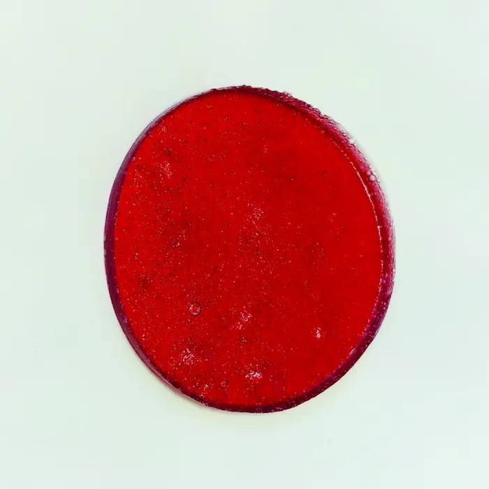
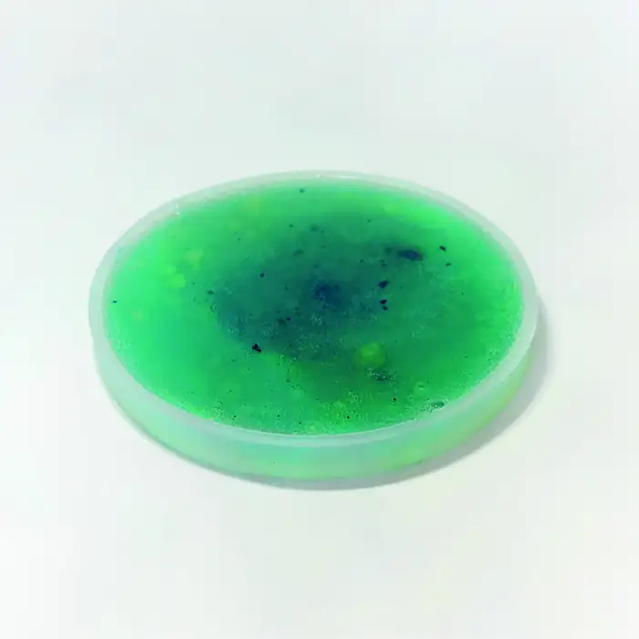

Gelatina
- Asciuga in circa 24 ore
- Di origine animale
- Odore acre
Scartata
Il materiale
Acqua, una base e un plastificante: un materiale che si cuoce in un pentolino, si cola in uno stampo e si lascia asciugare. Qui c'è tutto quello che ho provato prima di scegliere la ricetta del kit.
La bioplastica
Un materiale fatto con ingredienti naturali, che si cuoce in un pentolino, si cola in uno stampo e si lascia asciugare. Ho provato quattro basi diverse prima di scegliere quella giusta per il kit.
Scartata
Scartata
Scartata
Scelta per il kit ✓
Niente coloranti in boccetta: una radice o un ortaggio che si trovano in cucina fanno capire, molto meglio di un'etichetta, da dove viene il colore.
Le ricette
Le ricette a base di pectina che ho testato per il kit, con dosi, procedimento e quello che ho osservato.
Sciogli la pectina nell'acqua mescolando con energia, per evitare i grumi.
Aggiungi il colorante naturale e la glicerina, che rende il materiale flessibile.
Cuoci a fuoco medio-basso, mescolando, finché il composto si addensa.
Versa nello stampo e lascia asciugare circa 24 ore.
 Base
BaseDopo 24 ore è asciutta, lucida e trasparente. Mescolando con più energia i grumi spariscono quasi del tutto. In una settimana il diametro passa da 8,8 a 8,2 cm: la pectina è la base più stabile.
 Giallo
GialloUn giallo trasparente e luminoso, bellissimo in controluce. Più curcuma dà un giallo più scuro. Si può arrotolare e piegare e torna da sola alla sua forma.

RossoUn rosso acceso e brillante che resta vivo anche dopo una settimana. Asciuga piatta, senza ritiri né curvature, ed è molto flessibile.
 Verde
VerdeUn verde intenso: in controluce si vedono i piccoli frammenti di spirulina, che danno una texture molto particolare. Si può stringere e piegare senza crepe.

AzzurroIn cottura il blu sbiadisce e resta solo nei grumi al centro. Da sola non tiene il colore, ma mescolata agli altri pigmenti è perfetta per ottenere i colori secondari.
In tutto ho sperimentato più di 60 campioni tra gelatina, agar-agar, amido di mais e pectina.